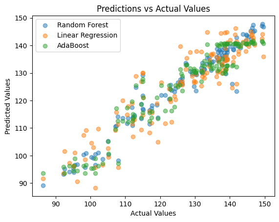

Problem Statement
Objectives
- Handling significantly large data and predicting the nature of changing stocks
- To effectively compare different ML models by using ensemble learning
- To see the nature of deep learning models used in short-term and long-term cases
- Comparatively analyzing their accuracies to glean an understanding of their performance
Data
- Tweets - Sentiment Analysis for tweets employs "twscrape" for extracting the Twitter data. Since the market is not open every day, we extracted the dates on which the market is open and collected the tweets for each company. The following features were extracted in the dataset extracted via the twscrape API:
- Date: Date in which the tweet is made
- Tweet: The tweet from a user about the company.
- Stock Data - Stock price and volumes since 2021-01-01, i.e., 3 years are extracted using YahooFinance by selecting 3 companies: Google, Amazon, and Microsoft. Data comprised of: Open, High, Low, Volume, Close, Adjusted Closing Price(a better predictor than the closing price).
Effect of PCA
-
Microsoft:
In general, PCA results in a higher Mean Squared Error (MSE) for all models and scenarios. The R2 scores are slightly lower with PCA, indicating a moderate impact on predictive accuracy.
-
Google:
The impact of PCA is inconsistent. While there is a slight increase in MSE for some scenarios, others see a decrease or remain similar. R2 scores are generally maintained well with or without PCA.
-
Amazon:
PCA tends to increase MSE for most scenarios, indicating a potential trade-off between dimensionality reduction and predictive accuracy. R2 scores also show a slight decrease in some cases.
Models Trained
Experiments
System Overview
Results
×

Microsoft
14 Day Without PCA
Next Day Without PCA
14 Day With PCA
Next Day With PCA
×
Google
14 Day Without PCA
Next Day Without PCA
14 Day With PCA
Next Day With PCA
×

Amazon
14 Day Without PCA
Next Day Without PCA
14 Day With PCA
Next Day With PCA
Model Observations
- Random Forest consistently performs well across scenarios and companies.
- Linear Regression tends to have higher MSE values but still maintains reasonable predictive power.
- AdaBoost shows balanced performance but might be sensitive to the presence of PCA.
- LSTM performs better with PCA, with lower MSE for the next day than for predicting the values after 14 days.